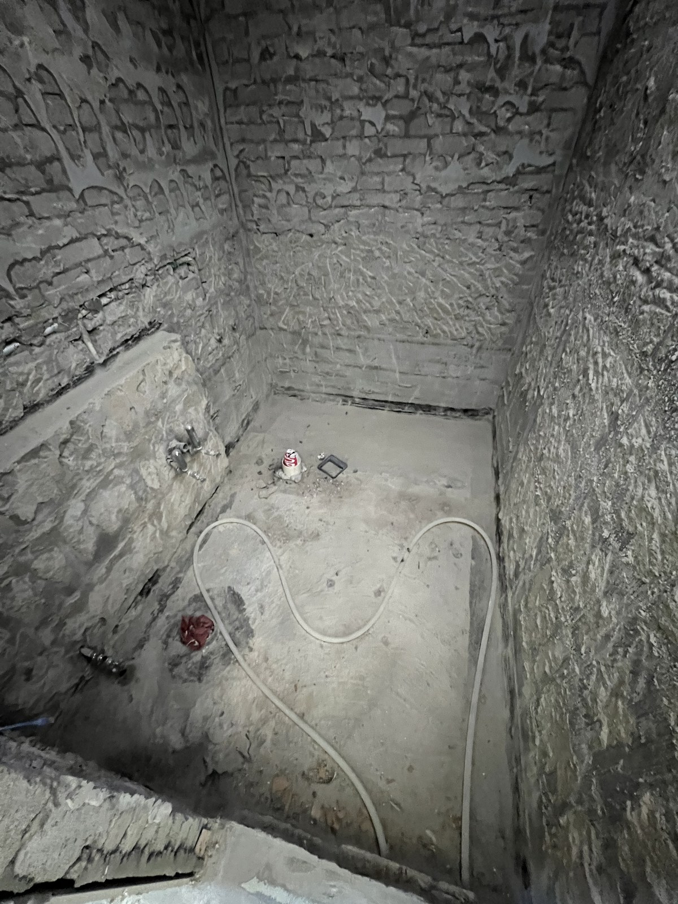
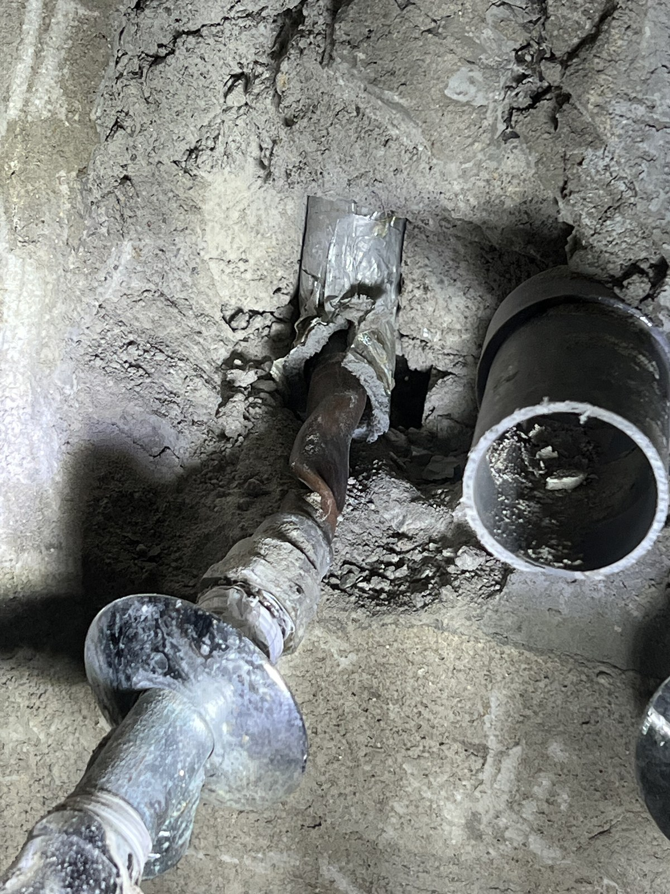
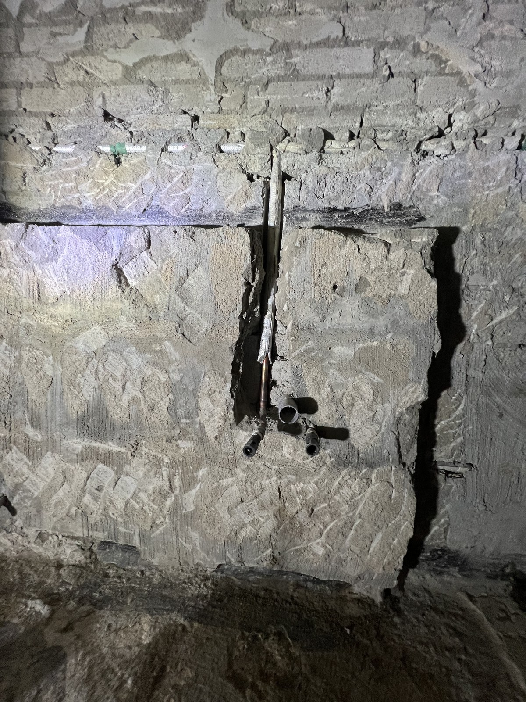
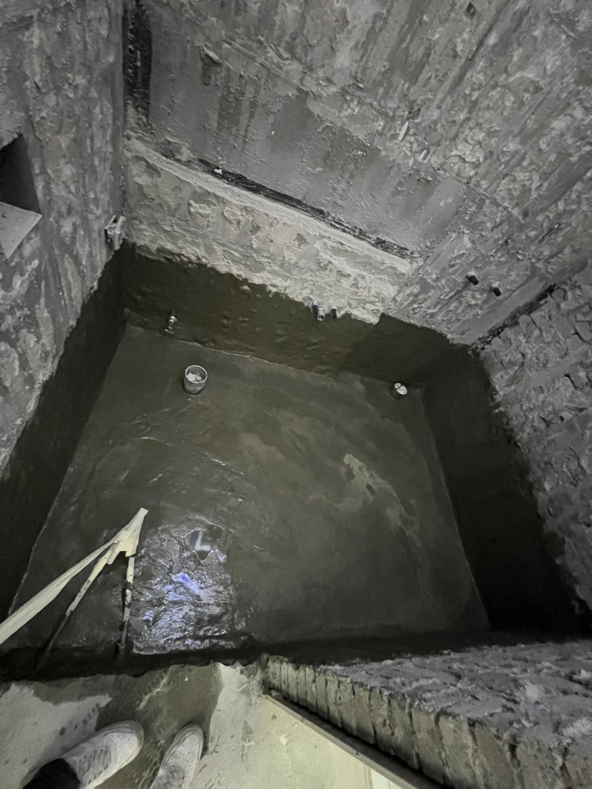
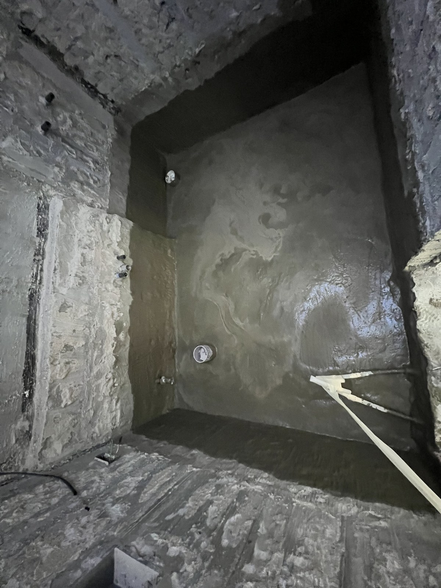
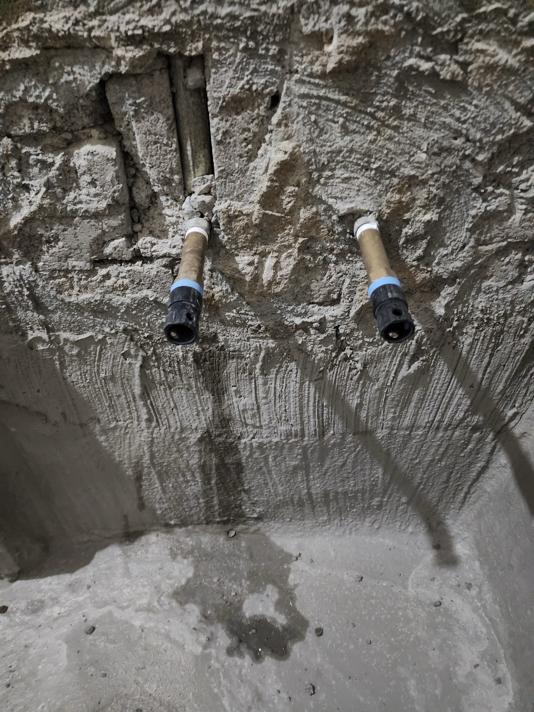
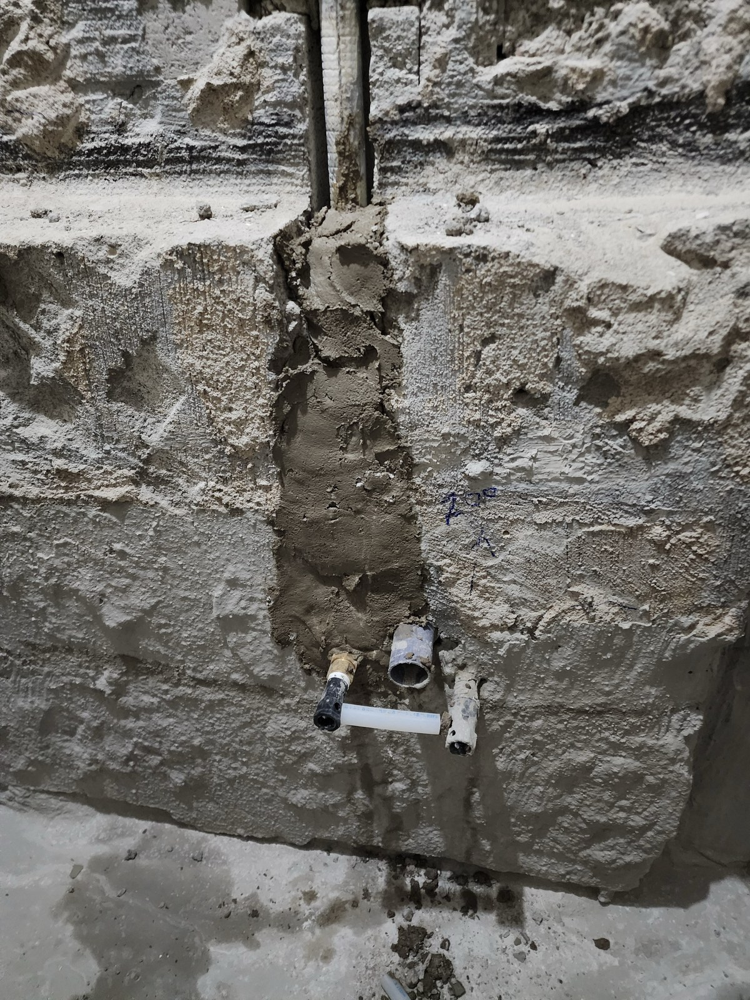
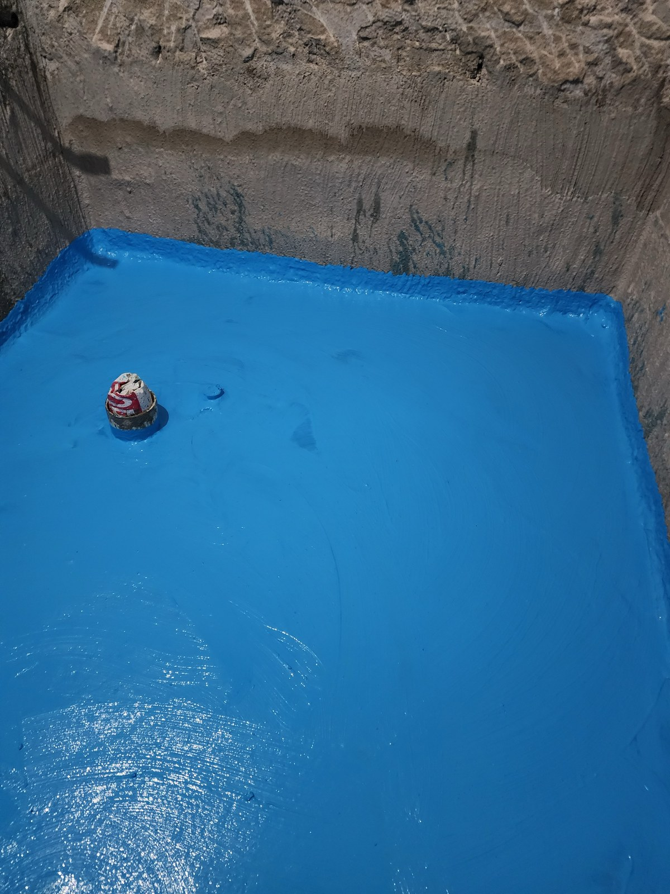
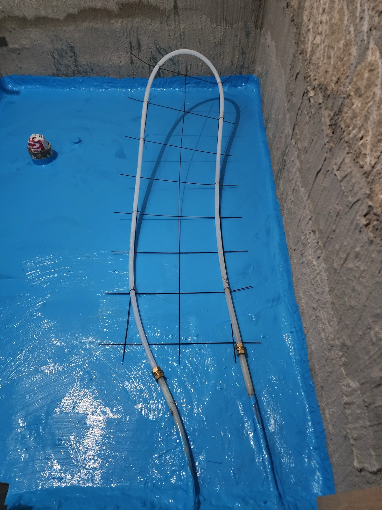

대전 욕실 방수 공사｜도안센트럴 배관 교체와 도막방수 과정

현장 작업 한눈에 보기
- 현장
- 대전 도안센트럴 욕실
- 문제
- 마감 전 배관·방수 공정
기존 동관과 바탕 상태 확인 - 작업
- 동관 구간 교체·1·2차 방수
도막방수·난방배관 배치 - 결과
- 도막과 배관 배치까지 기록
담수시험·타일 마감은 미확인
대전 도안센트럴 욕실의 기존 배관 확인, 1·2차 방수, 배관 교체 후 연결부와 도막방수·난방배관 배치 과정을 소개합니다. 타일 마감 전 공정으로, 욕실 전체 준공 사례와 구분해 보실 수 있습니다.
타일 마감 전에 배관과 방수 공정을 살펴보세요
대전 도안센트럴 욕실에서 진행한 배관·방수 작업입니다. 기존 동관 확인부터 방수와 난방배관 배치까지, 나중에 마감 아래로 가려지는 공정을 차례로 소개합니다.
9월 17~18일과 9월 23일의 공정 사진을 순서대로 배치했습니다. 사진 날짜는 각 작업 단계의 기록이며 전체 공사기간을 뜻하지 않습니다. 첫 사진은 기존 마감을 걷어낸 벽과 바닥입니다.

기존 동관과 이음부를 드러낸 상태
벽 안쪽을 열자 동관의 굽은 부분과 기존 연결 부속이 드러났습니다. 배관이 벽을 통과하는 위치와 이음부를 확인할 수 있습니다.
아래 사진은 기존 상태와 교체 후 연결 위치를 비교하는 자료입니다. 구체적인 누수 원인이나 책임 구분을 확정하는 자료는 아닙니다.

벽 안쪽 배관 경로를 드러낸 단계
벽의 세로 구간을 열어 배관이 지나가는 자리를 드러냈습니다. 이 사진과 교체 후 사진을 이어 보면 수전이 놓일 위치 주변을 어떻게 손봤는지 살펴볼 수 있습니다.

1차 방수 — 바닥과 벽 하단을 함께
9월 17일 1차 방수로 기록된 모습입니다. 바닥에서 벽 하단으로 이어지는 회색 시공면과 출입구 경계가 보입니다.
욕실 방수는 넓은 바닥뿐 아니라 벽과 만나는 가장자리, 배관이 나오는 위치까지 함께 살펴보는 공정입니다.

2차 방수 — 앞 단계와 구분해 보기
9월 18일의 2차 방수 단계입니다. 같은 욕실의 바닥과 벽 하단을 볼 수 있으며, 다음에 나오는 파란색 도막방수와는 구분되는 장면입니다.
공사 상담에서는 방수라는 항목 하나만 보기보다 어떤 바탕 작업과 자재, 시공 범위를 포함하는지 함께 확인해 주세요.

9월 23일, 배관 교체 후 벽면
배관 교체 후 수전 연결 위치를 남긴 사진입니다. 벽 안쪽을 열었던 자리의 보수면과 밖으로 나온 두 연결부가 보입니다. 마감으로 가려지기 전에 위치를 확인할 수 있도록 기록했습니다.

다른 연결 위치도 함께 기록
같은 날 다른 벽면의 배관 연결 위치를 담았습니다. 연결부의 간격과 벽체 보수 범위가 함께 보입니다.
이번 사진에서는 연결부를 확인할 수 있으며, 수전·위생기구까지 설치된 최종 욕실 모습은 아닙니다.

파란색 도막방수 도포
9월 23일 도막방수 사진입니다. 바닥 전체와 벽 하단에 파란색 도막이 이어지고 배수구 주변도 함께 보입니다. 앞선 회색 방수면과 구분되는 다음 공정입니다.

도막방수 다음, 철망과 난방배관 배치
방수면 위에 철망과 난방배관을 배치한 모습입니다. 배관이 놓인 경로와 배수구 주변 위치를 함께 확인할 수 있습니다.
이 단계는 미장이나 타일로 배관을 덮기 전입니다. 완성된 욕실 사진과는 구분해서 보셔야 합니다.

이번에 확인된 범위와 이후 공정의 구분
반대 방향에서 본 난방배관 배치입니다. 이번 자료는 도막방수와 난방배관 배치까지를 보여줍니다. 담수시험 결과와 이후 미장·타일 마감, 최종 준공 여부는 확인되지 않았습니다.
욕실 공사를 상담하실 때는 방수만 필요한지, 배관과 타일·위생기구까지 손볼지 구분해 말씀해 주세요. 기존 배관과 방수층, 마감 전 배관 사진을 보관하면 작업 범위를 확인하는 데 도움이 됩니다.